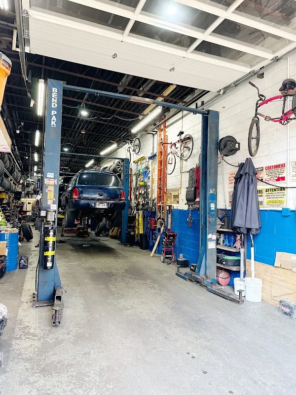
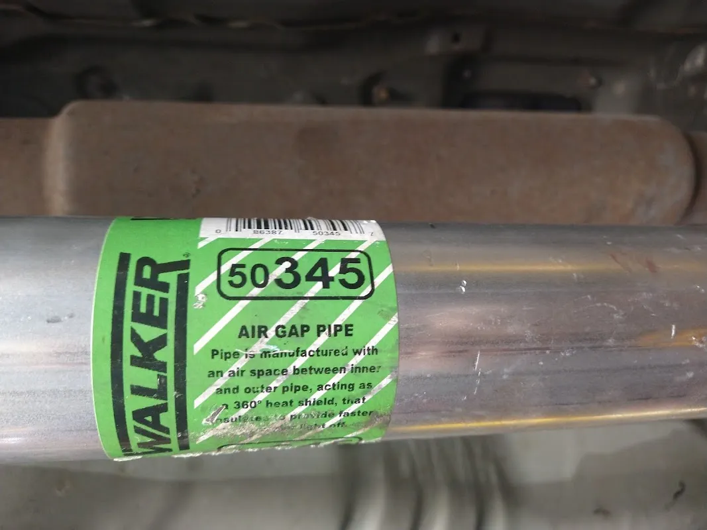

Family Auto Repair
Auto repair shop in Brooklyn.
172 Hope St, Brooklyn, NY 11211

172 Hope St, Brooklyn, NY 11211
172 Hope Street
Family Auto Repair Shop is listed at 172 Hope Street in Brooklyn. Have your vehicle details ready and discuss the concern, proposed timing and estimate directly with the shop.
Family Auto Repair Shop is listed at 172 Hope St, Brooklyn, NY 11211. Explore the actual photographs and customer experiences before getting in touch.
Discuss your enquiry
172 Hope St, Brooklyn, NY 11211
Get directionsCustomer words
“These guys run a clean cut business they have great prices for oem parts that they install on your vehicle Roberto and Edwin are very knowledgeable with today’s industry have problem see them first More Like”
Eddie Roy
Read the reviewsPlan your visit
Prepare a clear enquiry for Family Auto Repair Shop. Confirm the available service, price and timing directly.
172 Hope St, Brooklyn, NY 11211